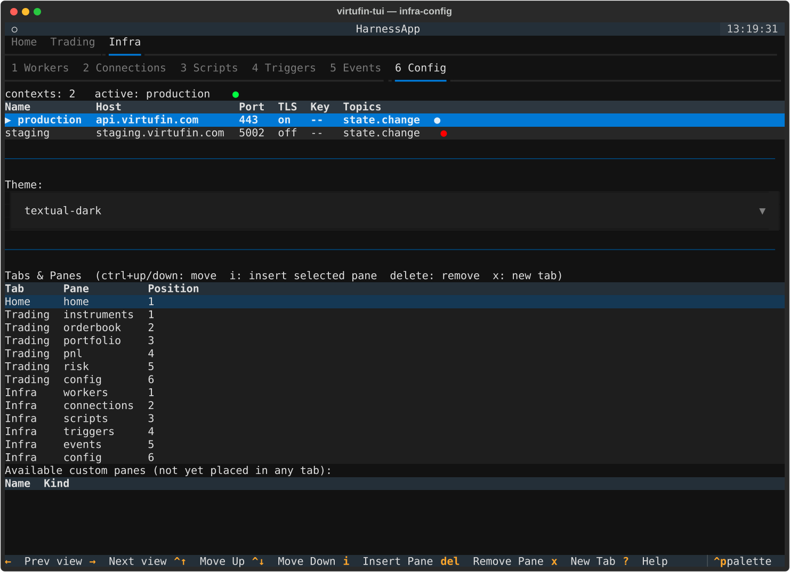

Tabs & custom panes¶
The dashboard's tab layout — which top-level tabs exist, and which panes
sit under each as sub-tabs — is driven by pane_order in
~/.config/virtufin/tui/config.toml, not hardcoded. You can reorder
built-in panes, add your own, and add whole new top-level tabs.
pane_order schema¶
[[pane_order]]
id = "home"
label = "Home"
panes = ["home"]
[[pane_order]]
id = "trading"
label = "Trading"
panes = ["instruments", "orderbook", "portfolio", "pnl", "risk", "config"]
[[pane_order]]
id = "infra"
label = "Infra"
panes = ["workers", "connections", "scripts", "triggers", "events", "config"]
Each [[pane_order]] entry is one top-level tab: id (used internally),
label (shown in the tab bar), and panes (ordered pane ids shown as
sub-tabs, selectable with keys 1-9). A tab with a single pane — like
home above — renders with no sub-tab bar; that one pane is shown
directly.
Pane ids must match either a built-in page (home, workers,
connections, scripts, triggers, events, config, instruments,
orderbook, portfolio, pnl, risk) or the filename stem of a custom
pane under ~/.config/virtufin/tui/panes/ (see below).
Important: keep the [[pane_order]] block last in config.toml. In
TOML, any bare key = value line after an array-of-tables header belongs
to that table, not the document root — anything you add below it would
silently attach to the last tab entry instead of being a real top-level
setting.
Editing pane_order from the TUI¶
The Config page (Infra → Config, or any tab's Config sub-tab) has a "Tabs & Panes" section below the contexts table:

| Key | Action |
|---|---|
ctrl+up / ctrl+down |
Move the highlighted pane up/down within its tab |
delete |
Remove the highlighted pane from its tab |
i |
Insert the pane highlighted in "Available custom panes" after the highlighted row in "Tabs & Panes" |
x |
Add a brand-new top-level tab (prompts for id + label) |
Reordering, removing, and inserting take effect immediately — the next time you switch into that tab, its sub-tab bar is rebuilt from the current config. Adding a new top-level tab needs a restart to appear in the tab bar (the top-level tab bar itself is only built once, at startup).
Custom panes¶
Drop files into ~/.config/virtufin/tui/panes/ (created automatically).
Two kinds, distinguished by what's alongside the .py file:
Script + form pane¶
A <name>.py with a sibling <name>.form.json — the same convention
already used by the Scripts page's built-in examples (see
create_worker.py / create_worker.form.json there for a full
reference). The form's fields are collected and passed to your script as
JSON via the VIRTUFIN_TUI_FORM_DATA env var when submitted; the script
also receives the same VIRTUFIN_TUI_API_{HOST,PORT,TLS,KEY} /
VIRTUFIN_TUI_WORKER_API_{HOST,PORT} env vars every script gets. Output
streams to a log below the form. This is a one-shot action pane, not a
continuously updating one. The form schema itself is defined by
textual_jsonforms -- see docs/textual-jsonforms-spec.md in the repo
root for the full field-type reference. (The same library also powers
the Workers page's n/New Worker form, built dynamically from a
worker's JSON-Schema config_schema rather than a hand-written
.form.json.)
Live widget pane¶
A <name>.py with no sibling .form.json, defining a module-level
class named exactly Pane:
from textual.widget import Widget
class Pane(Widget):
def __init__(self, stores, client, **kwargs):
super().__init__(**kwargs)
self._stores = stores
self._client = client
def compose(self):
...
def on_mount(self):
self.set_interval(1.0, self.refresh)
Pane must subclass textual.widget.Widget and follow the same
__init__(self, stores, client, **kwargs) convention as built-in pages
(stores is the dashboard's DataPump, client is the active
TuiClient). This gives you a genuine persistent page — live polling,
subscriptions, whatever you need — not just a form submission.
A file matching neither pattern (no form, and no Pane class) is skipped
and logged as a warning; it won't crash the TUI.